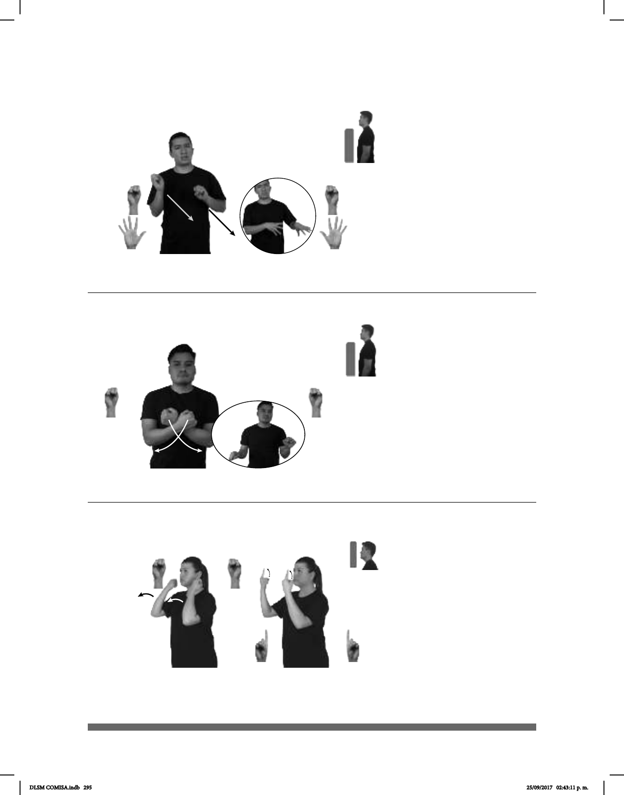

295
Seña: SS
Seña que pasa de S.1 a
Las palmas inician oblicuas
hacia abajo y hacia dentro y terminan
hacia dentro.
Del cuello a la cara.
Los brazos se mueven
formando un arco hacia el frente y
después el dedo índice se extiende.
v. tr. Ver, contemplar o
considerar con estima o agrado especiales
a alguien o algo que llaman la atención
por cualidades juzgadas como
extraordinarias.
(S-6)
CANTAR+MUJER dm-MADONNA pro-ELLOS ADMIRAR pro-ELLA
Ellos admiran a la cantante Madonna.
Seña: SS
S.1
Las palmas inician hacia
dentro y terminan hacia abajo.
A la altura del pecho, los
brazos cruzados.
Las manos parten de un
mismo punto y luego se abren hacia los
lados.
Labios retraídos.
adj. Que siente cansancio,
fastidio e indiferencia generalmente por
algo o alguien que le resulta poco
interesante o divertido.
(S-5)
MAESTRO TEMA ABURRIDO EXPLICAR++
El tema que explica el maestro es aburrido.
Seña: SS
Seña que pasa de S.1 a
5.1
Las palmas inician hacia
afuera y terminan oblicuas hacia la
izquierda y hacia adentro.
Del pecho a la cintura, del
lado derecho al izquierdo.
Recto mientras los dedos se
extienden.
Boca entreabierta,
punta de la lengua hacia afuera.
1. v. tr. Dejar solo algo o a
alguien alejándose de ello o dejando de
cuidarlo. 2. v. tr. Suspender una actividad
u ocupación.
(S-4)
1
2
dm-JUAN pos-SUYO
de él
PERRO YA ABANDONAR
Juan abandonó a su perro.
DLSM COMISA.indb 295 25/09/2017 02:43:11 p. m.